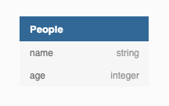

A simple Spark-powered ETL framework that just works
Paul Márquez
ETL

ELT

En algunos pasos del flujo que implementamos tuvimos que trabajar con más de 8 mil millones de datos

Conceptos básicos
Data Access Layer
La DAL nos permite leer y escribir en las bases de datos. Hay dos componentes que abstraen el DAL: Connectors y Repositories
Connectors
Es una DAL no tipada para Spark Dataframes
trait Connector extends HasSparkSession with Logging {
val storage: Storage
def read(): DataFrame
def write(t: DataFrame, suffix: Option[String]): Unit
def write(t: DataFrame): Unit
}
![](https://mermaid.ink/img/pako:eNqdl1uP2jgUgP9KlKrSrMSg3C_TpwIz0laoXS2jPvHixE6wcGzWMe2w1fz3dRIutkMCWyMhkvOdq-1j88vOGUT2k21ZJQe7jbX8-9OarqllzRmlKBeMW4-Pj9YLJuj85lNfvpiNST_P_1yMyZ_fckRUoEE0ly02X33XrfSRL6tvX28xfwH-zx4J05-SQucN1DWgkAPdnoktDhRUzMzfpL7IF6ZDrSqdLUSE4s6e2BXiFcBQTtCvRmVtiw2q0Np-kj8hKsCeiLU9UUTfAccgI6humFanEWUg35ac7SnsVH9usEBHxUa-47gC_DBnhPGO-PA8f56_vChMjXJGoUEVckDVkkBcYB3a1OQhcSaW6zgfJ1YaTb04CJ00cfz04x_9IGaMQ8QNfS-QBqJGPxnUPwd41UJ0NuBPQy8NXDeOglgzcIr9qn5yO4BjAq_oTag1cn3Xd5xrgZqkI4fnXonIAHmZPaTT0DkOV1Z18EkNkGCKVH9-OzR_ekC6VK5EOtuW4wvkAvTWRtbW1T2KUz92FrOe2DuKgRyad8A5-7lBAI5mUDAqXkCFyaEj1muZFUfZPt8gYVV18zyxfiAOAQUTq9ktxFBf4X-PO8yNdm9q-UCGyMzYSh9Q0nwUjMqOOlKmVtymOlSInOxrOfMjlTwRqplewY79YYnpdnzSsSBoeNYRLNHyvsxB07bUoNqtG6bTyIvcKPG8wJ9Y8jGOo9CPfNdLmv0UT1PHTSMnTgJf20-dueFKtnJja2RERmkyS33dlxwd1HWLSwrIcAE6-evo1uiWBnuT0Y420TN3tcn9dqVaszcqQRjb3UAoE6gXWX9htZieqFygIYAGc3tq8A8gMKN9n1EUXScNt0Hz0XqQPNppjr7uq0yzaJ54sln17cm-Ch5cx2vOKvnlheHEcqZBqi1KIlbXdG848C6FCrTDQIB6288_9IMiy01MTz4BqQOhwTQ1X-JyI0ZCO3F3IAvAtyNTeMK-7UWNIbqDnBOcb5sLin7u-W7kmxOOXu8rjQLrBcqKPC4KhSw5Vk8P0tTJaAaQ0SumRkkzQoPLORb9LIoikcPE9NWItMllEByMRqYTbRMYmQIkD1BulCgMPTlMyOx1PSon8nLcUENXnAIT8nrYIWeoEZ4Ad-iIOwHepT_6TnD7FnnS8y96rnfRG7z8nfQCRS-O7vcXXvQe_4e7SLlh3u8sVoJMkkFvjdr7mr7LPxL7HQQCPUMsj0P7qQCkRhMb7AVbHWh-ftFRCwzkn8Hq-Pb9PzDxLmA)
Repositories
Es una DAL tipado que conecta un Spark Dataset con su respectivo storage

El caso más común es un Spark Repository, el cual requiere un Connector para acceder al storage final
Entities
La representación de las entidades de nuestra base de datos debe ser clara y conscisa directamente en clases.

case class Person(name: String, age: Int)
object Person {
val schema = StructType(List(
StructField("name", CharType(32), true),
StructField("age", IntegerType, true)
))
}
El companion object nos permitió solucionar la implementación de tipos de datos que no tienen soporte en Spark Datasets*.
Factories
Las fábricas nos permiten implementar las
transformaciones. El Pipeline puede inyectar las
dependencias con el decorador @Delivery
case class City(name: String, state: String, id: Int)
case class Person(name: String, age: Int, city: String)
class PeopleFactory extend Factory[Dataset[Person]] with HasSparkSession {
import spark.implicits._
val people: Dataset[Person] = _
@Delivery
val cities: Dataset[City] = _
override def read(): this.type = ...
override def process(): this.type = ...
override def write(): this.type = ...
override def get(): Dataset[Person] = people
}
val peopleFactory = new PeopleFactory()
peopleFactory.read().process().write().get()
Workflow Management
SETL nos provee de dos abstracciones para construir el workflow de transformación de datos: Stages y Pipelines
Stages
Un Stage está compuesto por un conjunto de fábricas de datos independientes que pueden ejecutarse de manera secuencial o en paralelo
val stage = new Stage()
val statesFactory = new StatesFactory()
val citiesFactory = new CitiesFactory()
stage
.parallel(true)
.addFactory(statesFactory)
.addFactory(citiesFactory)
.describe()
.run()
Pipelines
Nos permiten organizar múltiples Stages en un orden específico. También puede recibir Factories y crea un Stage con una sola fábrica.
val setl = Setl.builder.getOrCreate()
val peopleFactory = new PeopleFactory
val citiesFactory = new CitiesFactory
val statesFactory = new StatesFactory
val territoryStage = new Stage()
territoryStage
.parallel(true)
.addFactory(citiesFactory)
.addFactory(statesFactory)
setl.newPipeline().addStage(territoryStage).addStage(peopleFactory).describe().run()
Configuración
Se realiza en un archivo Typesafe Config y nos permite la implementación de múltiples ambientes de ejecución
# local.conf
setl.config {
spark {
spark.master = "local[*]",
...
}
}
person { ... }
city { ... }
val setl: Setl = Setl.builder()
.withDefaultConfig()
.getOrCreate()
setl
.setSparkRepository[Person]("person")
.newPipeline()
.addStage(...)
.describe()
.run()
Features propuestos
En algún punto nos encontramos con la necesidad de escribir en bases on-premise en un ambiente CDP con tipos de datos específicos y sin soporte para los Spark Dataset. Se desarrollaron el Connector y el los cambios requeridos para el SparkRepository.
Spark Connector
El Spark Connector nos permite la implementación del DAL en una sesión de Spark. Esta definción liga directamente la configuración del ambiente de ejecución con el Connector
class SparkSQLConnector extends ConnectorInterface with CanDrop {
import spark.implicits._
var schema: String = _
var table: String = _
var mode: String = _
var format: String = _
var finalName: String = _
var partitionBy: Option[Array[String]] = _
override def setConf(conf: Conf): Unit = ...
override def setConfig(config: Config): Unit = ...
override def write(data: DataFrame): Unit = ...
override def write(data: DataFrame, suffix: Option[String]): Unit = ...
private[this] def read(schema: String, table: String): DataFrame = ...
override def read(): DataFrame = ...
def create(sch: StructType): Unit = ...
def exists(): Boolean = ...
def drop(): Unit = ...
}
Spark Repository
Para poder implementar tipos de datos no soportados en Spark Dataset, recurrimos a crear el schema a mano y posteriormente a insertar los datos en la tabla correspondiente:
object RepositoryImprovements {
implicit class RepositoryNewMethods[T: TypeTag](repo: SparkRepository[T]) {
val connector = repo.getConnector
def create(sch: StructType): SparkRepository[T] = ...
def saveOrCreate(
data: Dataset[T],
schema: StructType,
mode: String): SparkRepository[T] = ...
}
}
Conclusiones
SETL nos permite:
- Trabajar un flujo de transformación de Big Data
- Encapsular las transformaciones en Factories
- Usar tipado fuerte con Spark Datasets
- Ligar Entidades del modelo de datos con clases
- Configurar múltiples ambientes de ejecución
- Controlar el flujo de ejecución del proceso
- Flexibilidad para implementar nuevos conectores y fuentes de datos